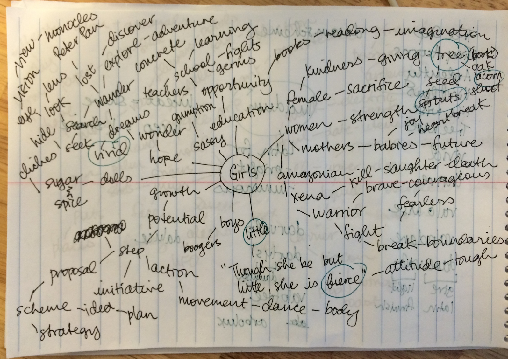
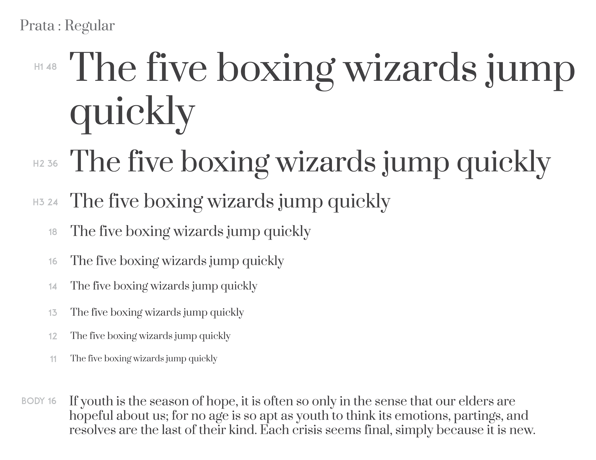

OVERVIEW
_

COMPANY & MISSION
Valonu | Providing menstrual cups for women everywhere.
MY ROLE
- Market Research
- Information Architecture
- UX Design
- UI Design
- Branding
- Front-End Development
PLATFORMS
- Desktop (Web
- Mobile (Web)
- Tablet (Web)
TECHNOLOGIES
- Sketch
- InVision
- Illustrator
- Photoshop
- Trello
- LookBack
DATE
- April 2016 - June 2016
DELIVERED
- UX/UI Design
- Responsive Website
Valonu is a platform for existing non-profits and organizations to receive menstrual cups and other educational resources for the communities they are serving.
CHALLENGE
_
Why menstrual cups?
Women and girls hold up half the sky and accessibility to education is vital. One barrier to education for girls and young women in developing countries is the stigma that accompanies their menstrual cycles, one that can be remedied by providing menstrual cups and vital menstrual health information.
Valonu is a passion project - it started with the personal discovery of the menstrual cup and the feeling of liberation that came with it, as well as the health benefits (use of medical-grade silicone instead of unregulated chemical ingredients in tampons and pads) and monetary savings (a one-time investment of $40 that’s good for 10 years, versus an average of $120 a year for pads and tampons). I started Valonu with the idea that menstrual cups should be made available for women and girls everywhere. My role is founder, designer, developer, and everything else in between.
APPROACH
_
Research & Discovery
USER INTERVIEWS
The crux of Valonu’s model is our ability to partner with existing non-profits and organizations. Rather than attempt to set up an individual non-profit or lone-standing NGO, the idea is the tap into organizations that already have a community they are serving with existing networks, resources, and bases of operation.
The mission is simple: provide menstrual cups and educational resources to the women and girls other non-profits and organizations are already helping.
But very many questions remain: are existing organizations willing to partner with Valonu? Do they have the time or energy to implement such a program? Will they want to take on an additional project, even if the resources come at no cost to them? As always, the best way to find out is to turn to our potential users - in this case, non-profit organizations like Ambassadors for Sustained Health.
These were the crucial points and conclusions we gleaned after interviewing stakeholders and decision-makers of non-profits:
- Prior to agreeing to a partnership, non-profits must determine whether Valonu’s offerings align with their organization’s larger mission
- Any programs and curricula should be culturally appropriate and ideally be developed in concert with local staff
- Implementation must be easy and tailored for their community
One thing the users stressed is the importance of time: they are already so busy with their own programs that even if the interest is high, sometimes it is simply difficult to find enough time to oversee another project. Thus, Valonu must work to customize curricula and offerings for each organization and ensure every interaction is painless, efficient, and easy.
ARE THERE EXISTING PROGRAMS FOCUSED ON DISTRIBUTING MENSTRUAL CUPS?
Very few exist, which is why I believe this model of tapping into existing networks/communities and distributing a sustainable, long-lasting resource like menstrual cups is worth exploring. The most important aspect is education and information - the menstrual cup has a higher learning curve than other disposable feminine products, but once you get over the first hurdle, the benefits far outweight the initial limitations.
VIEW COMPETITIVE ANALYSIS >
Structure the Experience
Now I was ready to put together user flows and user stories to guide and prioritize product features.
VIEW USER STORIES >

Creating An Identity
I took to pen and paper for brainstorming and brand inspiration. It was important to me to find an identity that conveyed strength, solidarity, professionalism, and femininity, but without the usual gendered aggressiveness associated with girls and female health products.
After much scribbling and scheming, I came up with the name “Valonu.” It’s a combination of “Valo,” which means light in Finnish, and “Nu,” which is the Chinese character for woman.

For typefaces, I wanted something that was more traditional yet still beautiful, and Prata by Cyreal offered both. I paired it with the elegant and classic Quattrocento Sans by Imparralli Type for its readability and non-intrusiveness.


The Framework
WIREFRAMES & SKETCHES
With the above knowledge, I was able to set the following three goals for the Valonu website and move forward with the project:
- For visitors to learn about Valonu
- For potential partners to sign up and connect with us so we can customize their curricula and resources
- For everyone to have access to free menstrual education resources and learn about recent developments in menstrual health
Using a mobile-first approach, I quickly sketched and put together low-fidelity wireframes to set the structure of the website and for rapid usability testing.
I conducted usability tests in person on Lookback and remotely via Skype to determine (a) whether users can successfully navigate the website and submit an application for partnership, and (b) whether users can intuitively understand that the Valonu logo on the mobile site is the trigger for a drop-down menu (instead of a traditional side-bar or “hamburger” icon). All users had no issues or questions and were able to successfully complete the tasks. Following this, I built a high-fidelity, interactive prototype on InVision and did additional testing for content and design preferences.
CODING & BUILDING
Using the feedback from my design critiques and usability tests, I began developing Valonu. One of the most rewarding and challenging aspect of this project was the opportunity to stretch my front-end development skills. Valonu is the first website I’ve ever built from scratch, and the long journey of HTML/CSS, getting comfortable with jQuery/javascript, and wrangling of site responsiveness was one I, very surprisingly, grew to love.
I learned the hard way of what it means to build “mobile-first” and have started a long list of things I want to learn and dive into, like Foundation, SASS, and other tools that will make me a better developer and maintain the integrity of my code. Working on Valonu and taking the plunge to build my first website has opened up a whole different world, and I’m thrilled by the endless possibilities!
INTRODUCING VALONU
_
Providing Menstrual Cups for Women Everywhere
CONCLUSIONS
_
What I Learned
TALK TO THE USERS
The interviews and meetings I had with my users moved Valonu in a direction that was subtle but extremely significant. Truly understanding their needs and the various obstacles (read: design and operational opportunities) they anticipate can guide product development that pays off in the long-run. Maintaining that feedback channel with users is also crucial to make sure that you’re in-tune and on-track with building a useful, functional product.
BUILD MOBILE FIRST
I mentioned this earlier, but it was such a strong lesson that I must repeat it here - as a designer, I was used to putting together mobile-first wireframes and designs. But somehow, the concept didn’t translate into my front-end development forays, and it was a hard lesson learned. The detangling process that comes with breaking everything you’ve built to make it responsive was painful, but the good thing is I’ll never forget again for future projects!
WHAT'S NEXT?
Development-wise, Valonu is still a work in progress. Feel free to check out the InVision prototype here! Other next steps are largely operational - finding partner organizations to work with and building a team that can get Valonu up and running. There is still a lot of work and research to be done, but I hope to see Valonu take off very soon!